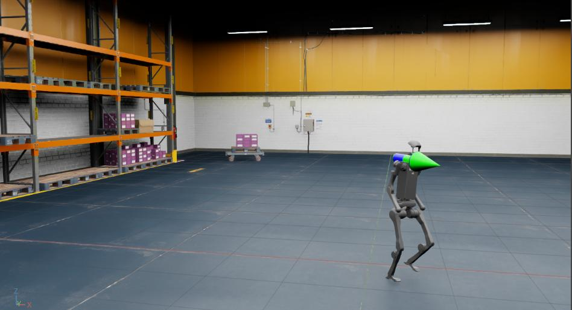

上一节介绍了如何修改现有 Direct RL Environment。本教程将进一步说明如何在预先构建的 USD Scene 中运行已经训练好的 Policy。
示例使用 RSL-RL 为 Isaac-Velocity-Rough-H1-v0 Task 训练的 H1 Rough Terrain Policy，并在一个简化的仓库 USD Scene 中执行推理。
1 教程代码
本教程使用由已训练 Policy Checkpoint 导出的 JIT 文件，即可脱离训练流程运行的 Policy 版本。
H1RoughEnvCfg_PLAY 封装 Policy Inference 所需的 Environment Configuration，包括要实例化的 Asset。
为了使用预先构建的 USD Environment，而不是 Configuration 中的 Terrain Generator，需要在把 Config 传给 ManagerBasedRLEnv 前进行以下修改。
代码 policy_inference_in_usd.py
# Copyright (c) 2022-2026, The Isaac Lab Project Developers (https://github.com/isaac-sim/IsaacLab/blob/main/CONTRIBUTORS.md).
# All rights reserved.
#
# SPDX-License-Identifier: BSD-3-Clause
"""
This script demonstrates policy inference in a prebuilt USD environment.
In this example, we use a locomotion policy to control the H1 robot. The robot was trained
using Isaac-Velocity-Rough-H1-v0. The robot is commanded to move forward at a constant velocity.
.. code-block:: bash
# Run the script
./isaaclab.sh -p scripts/tutorials/03_envs/policy_inference_in_usd.py --checkpoint /path/to/jit/checkpoint.pt
"""
"""Launch Isaac Sim Simulator first."""
import argparse
from isaaclab.app import AppLauncher
# add argparse arguments
parser = argparse.ArgumentParser(description="Tutorial on inferencing a policy on an H1 robot in a warehouse.")
parser.add_argument("--checkpoint", type=str, help="Path to model checkpoint exported as jit.", required=True)
# append AppLauncher cli args
AppLauncher.add_app_launcher_args(parser)
# parse the arguments
args_cli = parser.parse_args()
# launch omniverse app
app_launcher = AppLauncher(args_cli)
simulation_app = app_launcher.app
"""Rest everything follows."""
import io
import os
import torch
import omni
from isaaclab.envs import ManagerBasedRLEnv
from isaaclab.terrains import TerrainImporterCfg
from isaaclab.utils.assets import ISAAC_NUCLEUS_DIR
from isaaclab_tasks.manager_based.locomotion.velocity.config.h1.rough_env_cfg import H1RoughEnvCfg_PLAY
def main():
"""Main function."""
# load the trained jit policy
policy_path = os.path.abspath(args_cli.checkpoint)
file_content = omni.client.read_file(policy_path)[2]
file = io.BytesIO(memoryview(file_content).tobytes())
policy = torch.jit.load(file, map_location=args_cli.device)
# setup environment
env_cfg = H1RoughEnvCfg_PLAY()
env_cfg.scene.num_envs = 1
env_cfg.curriculum = None
env_cfg.scene.terrain = TerrainImporterCfg(
prim_path="/World/ground",
terrain_type="usd",
usd_path=f"{ISAAC_NUCLEUS_DIR}/Environments/Simple_Warehouse/warehouse.usd",
)
env_cfg.sim.device = args_cli.device
if args_cli.device == "cpu":
env_cfg.sim.use_fabric = False
# create environment
env = ManagerBasedRLEnv(cfg=env_cfg)
# run inference with the policy
obs, _ = env.reset()
with torch.inference_mode():
while simulation_app.is_running():
action = policy(obs["policy"])
obs, _, _, _, _ = env.step(action)
if __name__ == "__main__":
main()
simulation_app.close()
示例把 Device 设为 CPU，并在推理时关闭 Fabric。对于少量 Environment，CPU Simulation 通常比 GPU Simulation 更快。
2 代码执行
首先，我们需要训练 Isaac-Velocity-Rough-H1-v0 Task 通过运行以下命令：
./isaaclab.sh -p scripts/reinforcement_learning/rsl_rl/train.py --task Isaac-Velocity-Rough-H1-v0 --headless
训练完成后，我们可以使用以下 Command 可视化结果。
要停止 Simulation，您可以关闭窗口，或按 Ctrl+C 在Terminal中
您开始 Simulation 的位置。
./isaaclab.sh -p scripts/reinforcement_learning/rsl_rl/play.py --task Isaac-Velocity-Rough-H1-v0 --num_envs 64 --checkpoint logs/rsl_rl/h1_rough/EXPERIMENT_NAME/POLICY_FILE.pt
运行Play Script后，Policy将导出到实验日志目录下的JIT和onnx文件中。
请注意，并非所有学习库都支持将 Policy 导出到 JIT 或 onnx 文件。
对于目前不支持该功能的库，请参考相应的 play.py Script Library
了解如何初始化 Policy。
然后，我们可以加载仓库 Asset 并使用导出的 JIT Policy 在 H1 Robot 上运行推理
（policy.pt 文件在 exported/ 目录）。
./isaaclab.sh -p scripts/tutorials/03_envs/policy_inference_in_usd.py --checkpoint logs/rsl_rl/h1_rough/EXPERIMENT_NAME/exported/policy.pt

在本教程中，我们学习了如何对现有的 Environment Config 进行细微修改，以在预构建的 USD Environment 中运行 Policy Inference。